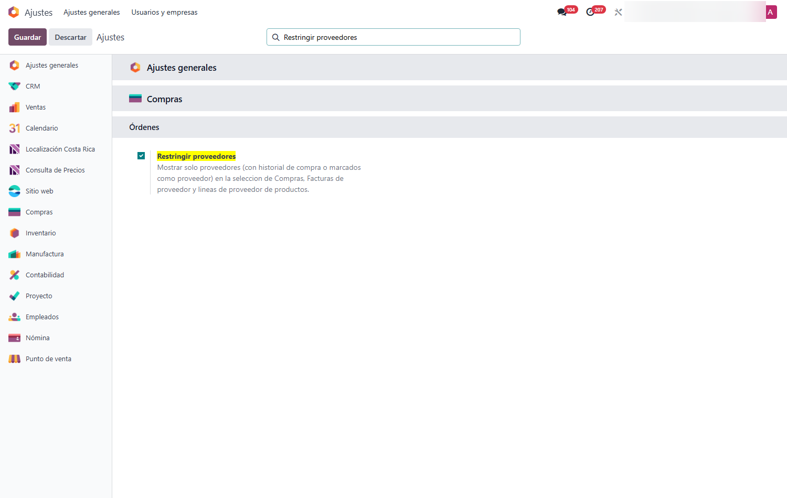
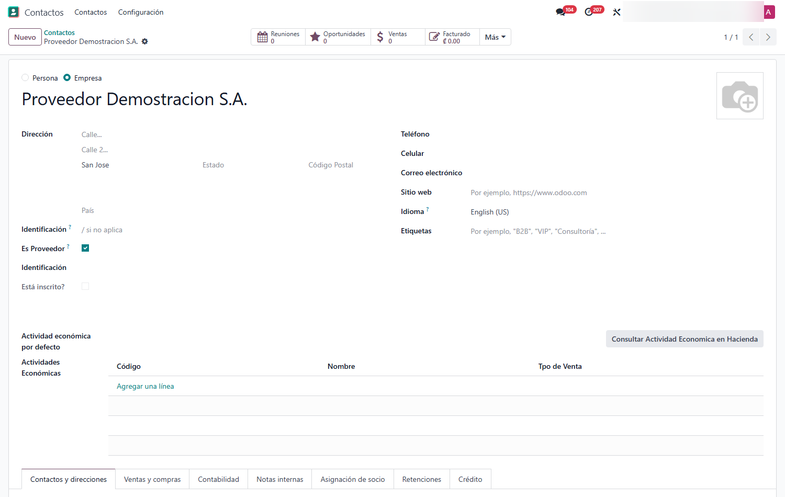
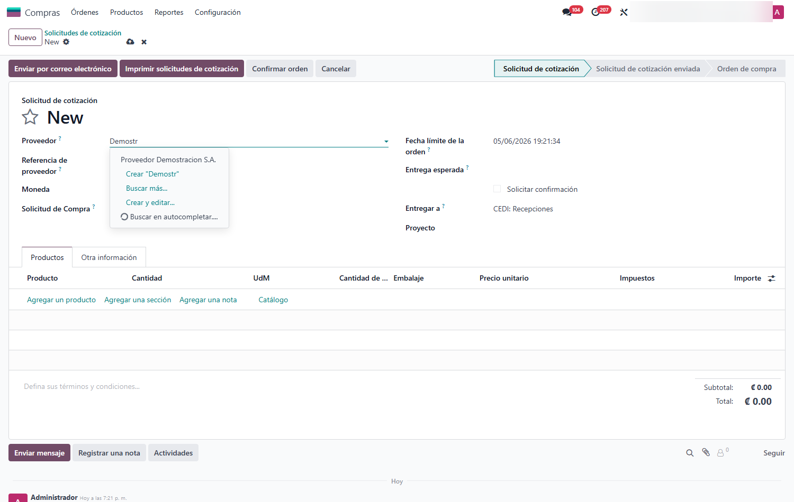
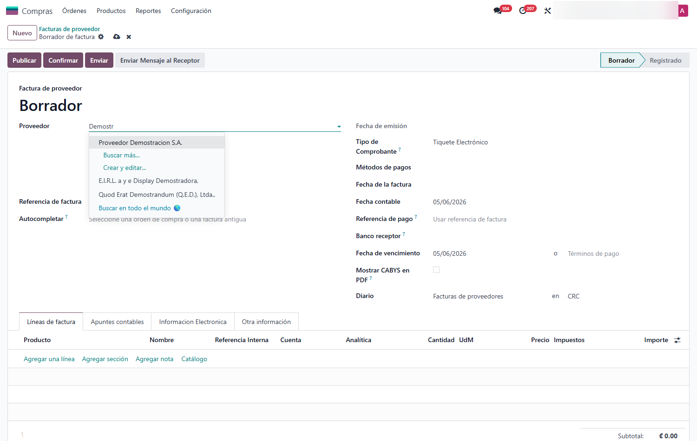

Restringir Proveedores en Compras
Hace que el campo Proveedor muestre únicamente proveedores —no toda la libreta de contactos— en órdenes de compra, facturas de proveedor y líneas de proveedor de producto en Odoo 18. Un contacto cuenta como proveedor si tiene historial de compra o si se marca a mano, y todo el filtro se enciende o apaga con un interruptor en Ajustes.
Capturas del proyecto
01 / 05




Escoger el proveedor entre cientos de contactos que no lo son
Por defecto, el campo Proveedor de una compra lista TODOS los contactos de la empresa: clientes, empleados, prospectos. En una base con miles de contactos, encontrar al proveedor correcto es lento y se presta a equivocaciones —terminar una orden de compra a nombre de un cliente.
Este módulo limita ese campo a quienes realmente son proveedores, en los tres lugares donde importa: órdenes de compra, facturas de proveedor y las líneas de proveedor del producto. Quien aún no tiene historial de compra se marca con una casilla, las facturas de cliente no se tocan, y todo se desactiva con un clic si alguna vez hace falta el comportamiento original.
Funcionalidades clave
-
Solo proveedores en el campo
Filtra la selección en órdenes de compra, facturas de proveedor y líneas de proveedor del producto.
-
Casilla 'Es Proveedor'
Válvula de escape para incluir a un proveedor nuevo que aún no tiene historial de compra.
-
Detección automática
Quien ya tiene historial de compra se reconoce como proveedor sin marcar nada.
-
Interruptor global
Se activa o desactiva desde Ajustes de Compras y aplica al instante, sin reiniciar.
-
No afecta a clientes
Las facturas de cliente y sus campos siguen mostrando todos los contactos, como siempre.
-
Filtro en Contactos
Un filtro rápido 'Proveedores' en la lista de contactos para ver solo a quienes lo son.
Tecnología detrás del producto
¿Tu equipo de compras pierde tiempo buscando al proveedor correcto?
Ajusto el criterio de proveedor a tus reglas y lo extiendo a cualquier otro campo que lo necesite.